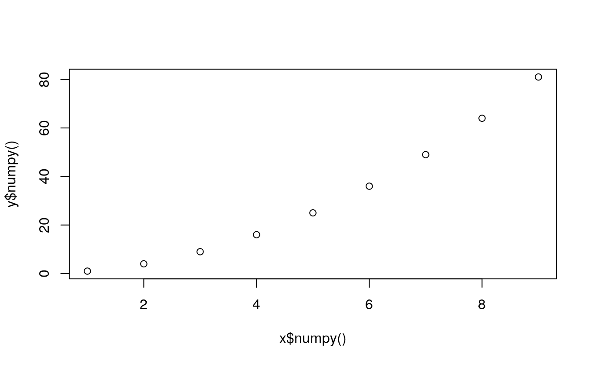

4 Converting tensors
Last update: Sun Oct 25 13:00:09 2020 -0500 (f5e8a1973)
4.1 Tensor to numpy array
This is a frequent operation. I have found that this is necessary when:
- a
numpyfunction is not implemented in PyTorch - We need to convert a tensor to R
- Perform a boolean operation that is not directly available in PyTorch
x <- torch$arange(1, 10)
y <- x^2If we attempt to plot these two tensors we get an error:
plot(x, y)#> Error in as.double(x): cannot coerce type 'environment' to vector of type 'double'They need to be converted to numpy, and then to R (which happens in the background):
plot(x$numpy(), y$numpy())
4.2 numpy array to tensor
- Explain how transform a tensor back and forth to
numpy. - Why is this important?
- In what cases in this necessary?
p <- np$arange(1, 10)
class(p)#> [1] "array"
(pt <- torch$as_tensor(p))#> tensor([1., 2., 3., 4., 5., 6., 7., 8., 9.], dtype=torch.float64)
class(pt)#> [1] "torch.Tensor" "torch._C._TensorBase" "python.builtin.object"
4.3 R objects to numpy objects
Given the R matrix \(m\):
#> [,1] [,2] [,3] [,4] [,5]
#> [1,] 1 3 5 7 9
#> [2,] 2 4 6 8 10We explicitly convert it to a numpy object with the function r_to_py():
(mp <- r_to_py(m))#> [[ 1 3 5 7 9]
#> [ 2 4 6 8 10]]
class(mp)#> [1] "numpy.ndarray" "python.builtin.object"
class(mp)#> [1] "numpy.ndarray" "python.builtin.object"